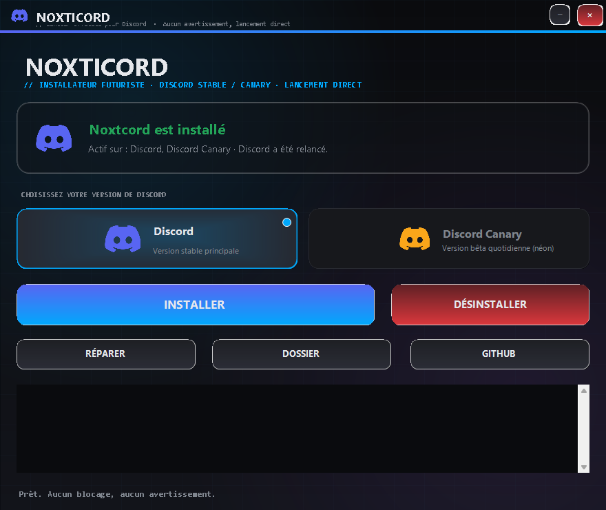

Le mod Noxticord pour Discord. Une commande, dix secondes, et c'est installé — zéro avertissement Windows, 100 % réversible.
✔ 0 avertissement Windows avec la commande PowerShell — pourquoi le .exe, lui, déclenche SmartScreen →
// ce qu'il fait
Patch de Discord côté client, sans compte, sans serveur, sans télémétrie. Tout reste sur ta machine.
Une commande PowerShell ou un double-clic : le payload est téléchargé depuis GitHub et Discord est patché.
La méthode PowerShell n'exécute aucun exécutable → SmartScreen ne peut pas s'afficher.
Détection automatique de toutes les versions de Discord installées, y compris deux builds Stable simultanés.
Un toast « Mettre à jour et redémarrer » apparaît dans Discord dès qu'une nouvelle version est publiée.
L'app.asar d'origine est sauvegardé en _app.asar : un désinstalleur remet tout d'origine.
Le lanceur noxtcord.exe offre carte d'état, choix de version, journal en direct et boutons Installer / Réparer.
Ni clone, ni Node, ni .NET : PowerShell 5.1 suffit (déjà présent sur Windows 10/11).
Discord a mis à jour ? node installer.mjs repair et le patch revient en un instant.
// aperçu
Le lanceur noxtcord.exe : carte d'état en direct, sélecteur de
version Discord, actions et journal — tout en une fenêtre, sans installation préalable.

// installation
Les trois méthodes donnent exactement le même résultat : le payload part dans
%APPDATA%\Noxticord\dist et resources\app.asar est patché.
Ouvre PowerShell, colle la commande, appuie sur Entrée. Le script télécharge le payload (avec repli fichier par fichier), retire toute marque « fichier téléchargé », puis patche Discord. Aucun .exe n'est lancé.
irm https://github.com/NayzDevFN/NoxtiCord/raw/main/install.ps1 | iex
Fenêtre style Vencord : carte d'état, choix de la version, journal en direct, boutons Installer / Désinstaller / Réparer. Le fichier n'étant pas encore signé, Windows peut afficher SmartScreen au premier lancement.
⬇ Télécharger noxtcord.exeBloqué ? Plus d'informations → Exécuter quand même — explications.
Pour modifier le build ou publier une nouvelle version du payload.
git clone https://github.com/NayzDevFN/NoxtiCord.git
node installer.mjs install
Aussi : status, uninstall,
repair, --no-kill, --no-relaunch.
La méthode A en trois gestes :
// fonctionnement
Quatre étapes, toutes réversibles, sans toucher à autre chose qu'à Discord.
L'installateur renomme resources\app.asar en _app.asar.
Ton Discord d'origine reste intact et restaurable à tout moment.
Un tout petit app.asar est écrit : son index.js fait simplement
require("%APPDATA%\Noxticord\dist\patcher.js").
Le contenu de payload/ (patcher, bundles, CSS, Monaco) est copié dans
%APPDATA%\Noxticord\dist depuis GitHub.
Discord redémarre, le build NoxtiCord prend le relais. Un toast « Mettre à jour et redémarrer » signale les nouvelles versions.
| Situation | Action |
|---|---|
| Après une mise à jour Discord | node installer.mjs repair — Discord recrée son dossier app-<version> |
| Nouvelle version publiée | Relance l'installateur : il récupère le dernier payload/ depuis GitHub |
| Tout remettre d'origine | .\uninstall.ps1 ou node installer.mjs uninstall |
// concerne uniquement la méthode B (.exe)
Ce message n'apparaît que si tu lances l'exécutable téléchargé par un navigateur. Voilà pourquoi, et comment le contourner.
SmartScreen ne s'active que sur un exécutable téléchargé par un navigateur
(Windows y colle la marque « Mark of the Web »). La commande PowerShell appelle
Invoke-WebRequest : les fichiers récupérés n'ont aucune marque,
Unblock-File la retire au besoin, et aucun .exe n'est exécuté.
Le payload installé est du JavaScript chargé par Discord — rien que Windows puisse bloquer.
Cause : noxtcord.exe est un exécutable non signé
numériquement et téléchargé depuis Internet. Windows applique la marque
« Mark of the Web » et SmartScreen bloque tout binaire inconnu. C'est le comportement par
défaut de Windows pour n'importe quel exe sans réputation — Defender l'a pourtant scanné
et le trouve propre.
Unblock-File -LiteralPath "C:\chemin\vers\noxtcord.exe"Solution définitive : la signature du code via SignPath (gratuite pour les projets open source) + soumission du fichier à Microsoft.
// aide
Les symptômes les plus fréquents, et où nous trouver.
| Symptôme | Solution |
|---|---|
| SmartScreen bloque le lancement | Section SmartScreen → Plus d'informations → Exécuter quand même |
| La GUI ne s'ouvre pas (« Jeton inattendu ») | installer-gui.ps1 doit être UTF-8 avec BOM (PowerShell 5.1 le lit en ANSI sinon) |
| « Aucune installation trouvée » | Discord Stable / PTB / Canary est-il bien installé ? |
| Installation refusée (fichier occupé) | Fermez Discord, ou ajoutez --no-kill |
| La catégorie NoxtiCord n'apparaît pas | node installer.mjs status puis relancez Discord |
| Après mise à jour Discord | node installer.mjs repair |
| Un fichier .bat / .zip est bloqué | Clic droit → Propriétés → Débloquer |
| Tout remettre d'origine | .\uninstall.ps1 |
irm https://github.com/NayzDevFN/NoxtiCord/raw/main/uninstall.ps1 | iex
_app.asar redevient app.asar :
Discord redevient strictement d'origine.
Discord installé (Stable, Canary, PTB ou Development) · Windows 10/11 ·
PowerShell ≥ 5.1 (intégré) ou Node.js ≥ 18 (CLI) ou
simplement noxtcord.exe.
Aucune donnée n'est envoyée : tout est installé localement.